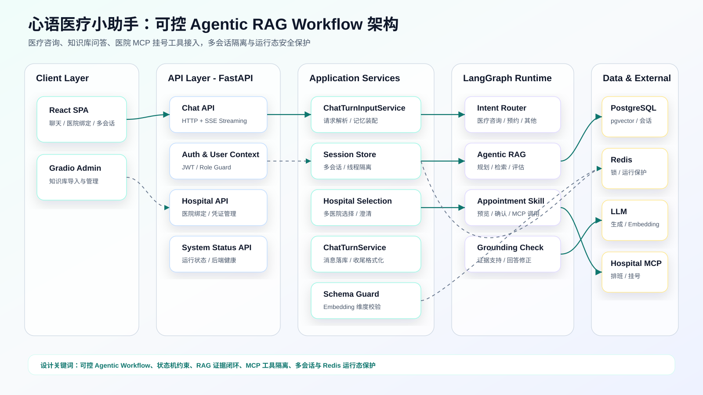
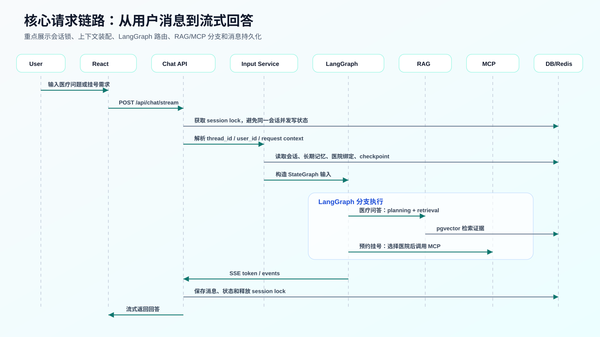
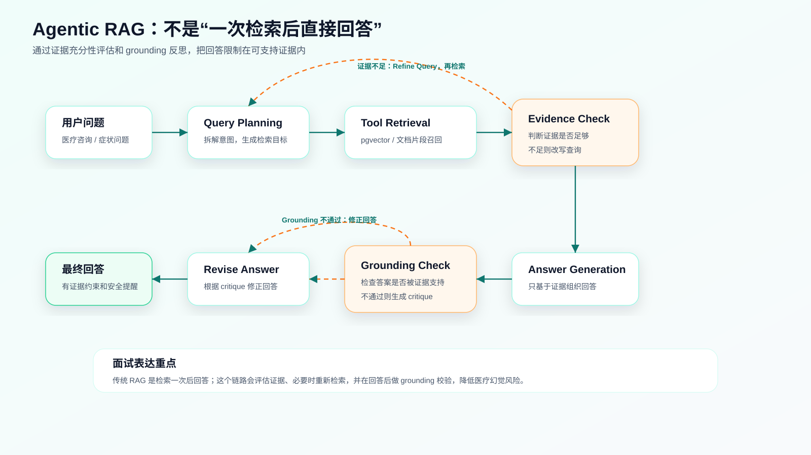
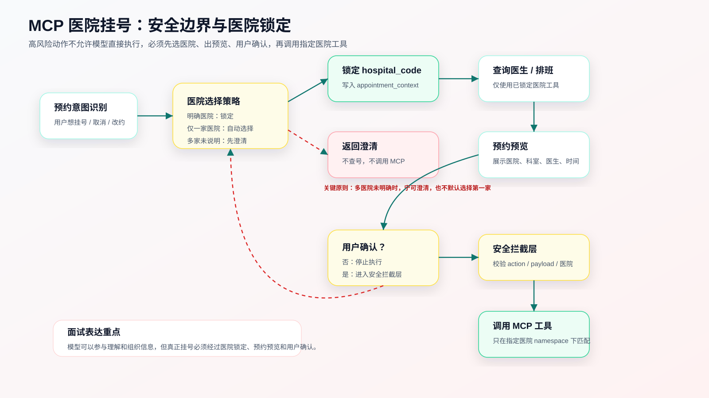

心语医疗小助手项目架构图
面试展示建议：先讲系统分层架构，再根据追问切到请求时序、Agentic RAG 或 MCP 挂号安全边界。
1. 系统分层架构图
用于开场说明整体系统边界：React、FastAPI、应用服务、LangGraph、数据层和外部医院 MCP。

单独打开图片2. 核心请求时序图
用于说明用户发一条消息后，后端如何加锁、装配上下文、进入 LangGraph、调用 RAG 或 MCP，并流式返回。

单独打开图片3. Agentic RAG 链路图
用于解释为什么它不是普通 RAG：有 query planning、证据评估、重新检索、grounding check 和回答修正。

单独打开图片4. MCP 挂号安全边界图
用于回答怎么防止模型误挂号：多医院先选择或澄清，预约预览后必须用户确认，再调用指定医院工具。

单独打开图片